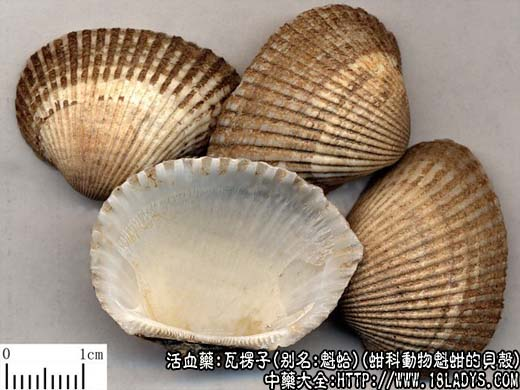

本品为少常常用中药。始载《名医别录》。列为下品，原名“蚶”。
别名：魁蛤、蚶子壳、瓦垅子。
来源：为蚶科动物魁蚶的贝壳，其肉亦供药用。多产于近大陆的浅海中。
产地：主产于江苏新海连、辽宁旅大、山东青岛等地。
性状鉴别：本品为近三角形或扇面形，左右两壳形状相同，互相吻合，长约2.5～8厘米，宽约2～6厘米。背面隆起，具直棱如瓦垅，约40条以上，由顶端向周围放射，棱纹明显，由灰褐色或白色相同而成。内面乳白色，光滑。上端边缘窄而直，有突起锯齿。质硬而脆、无臭无味。
以个均匀、洁净、无残忍、沙土者为佳。
主要成分：含碳酸钙90%以上，有机质约1.69%；尚含少量铁、镁、碳酸盐、磷酸盐及氯化物，烧煅后，产生氧化钙等，有机质被破坏。
功效与作用：本品对治疗十二指肠溃疡有效，取其散瘀止痛之功，无副作用。
炮制：生用或煅用。
性味：甘、咸、平。
归经：入肝、胃经。
功能：软血软坚，消症澼，化痰积。
主治：一切血气病，冷气痰澼，泄痢脓血，癓结血块。
临床应用：癓瓦楞子味走血分而软坚，故能消瘀血、散结止痛，化痰软坚。凡癓瘕痞块，老痰坚积，胃痛泛酸以及瘿瘤、瘰疠等皆可治之。
1、治胃溃疡、胃痛泛酸等，常与甘草配成散剂服用。
用量：9～15g（生者宜先煎10分钟），或入丸、散用；外用研末调敷。
处方举例：1、瓦楞子丸《万氏族炒方》：治一切气血癓瘕、消痰；瓦楞子煅、以醋淬三度、埋令坏，醋膏丸。
2、治胃痛吐酸水、噫气，甚吐血者《经验方》：瓦楞子（醋煅七次）270g、乌贼骨180g、炒陈皮90g，研极细末，每日三次，每次服6g，食后开水下。
附：蚶肉
别名：魁陆、伏老。
来源：同瓦楞子。
主要成分：魁蚶肉含水分82.04%、粗蛋白质15.79%、粗脂肪0.45%、灰分1.72%、糖原1.067%。每100g含维生素A400国际单位，B200μg，尼克酸2.5mg，C10mg。
性味：甘、温。
功能：补血、温中、健胃。
主治：血虚痿痹，胃痛，消化不良，下痢脓血。
使用注意：湿热盛者忌之。